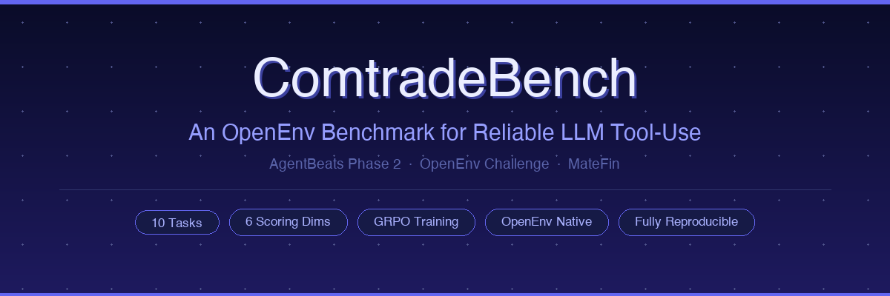
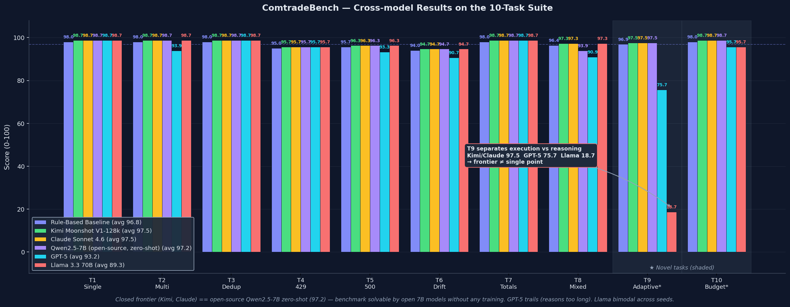
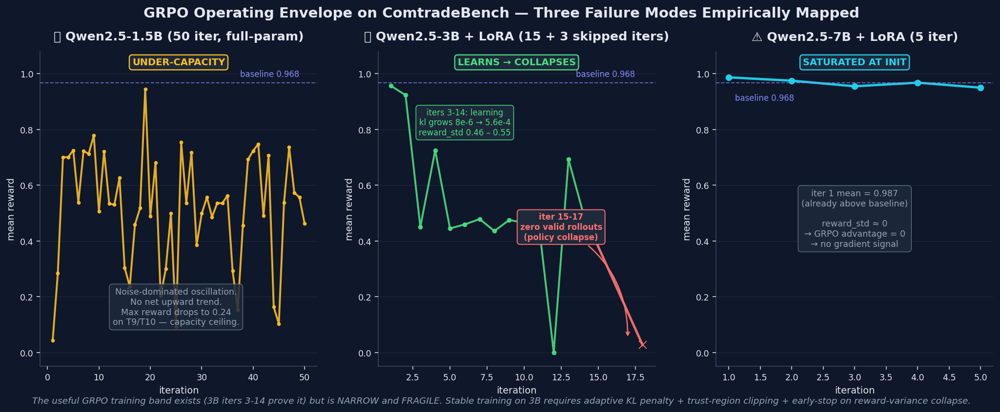

ComtradeBench
An OpenEnv Benchmark for Reliable LLM Tool-Use Under Adversarial API Conditions.

Agents should be judged by whether they finish the job
Large language models are often evaluated on what they can say. Real agents, however, are judged by whether they can finish the job when tools fail.
In practical API workflows, failure rarely comes from language alone. Pages drift. Duplicate rows appear across requests. Rate limits interrupt execution. Transient server errors force retries. Summary rows contaminate aggregates. Budgets make brute-force strategies impossible.
These are not unusual edge cases. They are normal operating conditions for production systems.
ComtradeBench is an OpenEnv benchmark designed to measure exactly this problem: can an LLM agent execute a multi-step API workflow reliably under realistic failure modes?
Why this benchmark matters
Many current evaluations still focus on final answers, clean tool calls, or static environments. But deployed agents fail for more operational reasons:
| Failure | What goes wrong |
|---|---|
| Miss pages | Incomplete data submitted as complete |
| Retry incorrectly | Page skipped after error — silent data gap |
| Double-count duplicates | Overcounted rows, inflated aggregates |
| Leak summary rows | Contaminated totals corrupt downstream analysis |
| Waste budget | Redundant fetches exhaust request limit |
| Recover silently | No auditable trace — failure invisible in production |
These are execution failures, not just reasoning failures.
If we want useful agents, we need benchmarks that measure reliable task completion under imperfect conditions — not only answer quality in idealized settings.
What ComtradeBench is
ComtradeBench is an OpenEnv-native benchmark and training environment for reliable tool-use. The domain is trade-data retrieval; the problem is broader: robust multi-step API execution under shifting, imperfect, and partially adversarial conditions.
The environment asks an agent to retrieve, clean, and submit records from a paginated API while handling:
- Pagination drift — page ordering randomized between calls
- Duplicate records — within-page (8%) and cross-page (3%) overlap
- Transient errors — HTTP 429 rate-limits and HTTP 500 server faults
- Totals trap — synthetic summary rows mixed into real data
- Mixed faults — rate-limit retry + dedup simultaneously
- Constrained budget — halved request limit, no room for waste
The goal is not to test whether the agent can describe the workflow. The goal is to test whether it can execute it — correctly, completely, efficiently, and robustly.
Environment design
Each episode gives the agent a parameterized retrieval task and a limited request budget. The agent interacts through three MCP tools only:
get_task_info() → task parameters + request budget
fetch_page(page, size) → {rows, has_more} or {status: 429|500, retry: true}
submit_results(...) → {reward, score, breakdown}The benchmark is structured as a curriculum of ten tasks:
| # | Task | Core challenge |
|---|---|---|
| T1 | Single page | Baseline correctness |
| T2 | Multi-page pagination | Merge 2,345+ rows across pages |
| T3 | Duplicates | Primary-key deduplication |
| T4 | HTTP 429 | Backoff + retry without data loss |
| T5 | HTTP 500 | Transient error recovery |
| T6 | Page drift | Canonicalize under non-deterministic ordering |
| T7 | Totals trap | Filter is_total=true rows |
| T8 | Mixed faults | Retry AND dedup simultaneously |
| T9 | Adaptive adversary | Fault intensity escalates mid-episode |
| T10 | Constrained budget | 50 requests instead of 100 |
T9 is, to our knowledge, among the earliest OpenEnv-style tasks to model within-episode fault escalation — where the environment becomes harder as the agent makes progress.
Why OpenEnv
We built ComtradeBench on OpenEnv because this benchmark is meant to be more than a one-off simulator.
OpenEnv gives us a standard environment interface, reproducible execution, and clean integration with evaluation and post-training workflows. The same environment code runs both in-process during GRPO training and as a deployed Docker service during evaluation — with no divergence.
Our goal is not only to score agents, but to provide a reusable environment where robustness can be studied and trained systematically.
Scoring what actually matters
ComtradeBench uses structured evaluation across six dimensions — not a binary pass/fail:
| Dimension | Weight | What it measures |
|---|---|---|
| Correctness | 30% | All expected rows present with correct field values |
| Completeness | 15% | Zero missing records |
| Robustness | 15% | Correct fault handling with logged evidence |
| Efficiency | 15% | Request count vs. task-optimal minimum |
| Data Quality | 15% | No duplicates or leaked totals rows |
| Observability | 10% | Structured execution trace in the run log |
Why multi-dimensional scoring matters: An agent that retrieves correct data but skips retry logging loses 15 points on Robustness. An agent that skips pages to save budget loses Completeness and all Efficiency credit. These behaviors are not equivalent — the benchmark does not treat them as equivalent.
The Observability dimension deserves special note: requiring structured log entries incentivizes the agent to maintain explicit execution state. This is not artificial — structured logs are how production ETL pipelines are monitored and debugged.
Baselines and results
Rule-based baseline (no LLM)
A deterministic rule-based agent achieves 96.8 / 100 average across all ten tasks, confirming the environment is well-calibrated and solvable.
| Task | Score | Reward |
|---|---|---|
| T1 Single page | 98.0 | 0.980 |
| T2 Multi-page | 98.0 | 0.980 |
| T3 Duplicates | 98.0 | 0.980 |
| T4 Rate limit (429) | 95.0 | 0.950 |
| T5 Server error (500) | 95.7 | 0.957 |
| T6 Page drift | 94.0 | 0.940 |
| T7 Totals trap | 98.0 | 0.980 |
| T8 Mixed faults | 96.4 | 0.964 |
| T9 Adaptive adversary | 96.9 | 0.969 |
| T10 Constrained budget | 98.0 | 0.980 |
| Average | 96.8 | 0.968 |
LLM agent — Kimi / Moonshot V1-128k (apples-to-apples across all 10 tasks)
All 10 tasks run under the same moonshot-v1-128k variant at temperature=0.0, seed=42.
| Task | Score | Reward | Delta vs baseline |
|---|---|---|---|
| T1 Single page | 98.7 | 0.987 | +0.7 |
| T2 Multi-page | 98.7 | 0.987 | +0.7 |
| T3 Duplicates | 98.7 | 0.987 | +0.7 |
| T4 Rate limit (429) | 95.7 | 0.957 | +0.7 |
| T5 Server error (500) | 96.3 | 0.963 | +0.6 |
| T6 Page drift | 94.7 | 0.947 | +0.7 |
| T7 Totals trap | 98.7 | 0.987 | +0.7 |
| T8 Mixed faults | 97.3 | 0.973 | +0.9 |
| T9 Adaptive adversary | 97.5 | 0.975 | +0.6 |
| T10 Constrained budget | 98.7 | 0.987 | +0.7 |
| Average (T1-T10) | 97.5 | 0.975 | +0.7 |
Kimi-128k matches or slightly exceeds the rule-based baseline on all 10 tasks. The real findings are in the cross-model and ablation data below.

Cross-model comparison — five LLMs, four independent findings
Five LLMs, same agent loop, same default prompt, seed 42 baseline plus 5-seed multi-run on T9:
| Model | T1-T8 avg | T9 score | T10 score | T1-T10 avg |
|---|---|---|---|---|
| Rule-based baseline | 96.5 | 96.9 | 98.0 | 96.8 |
| Kimi Moonshot V1-128k | 97.4 | 97.5 (std 0.0) | 98.7 | 97.5 |
| Claude Sonnet 4.6 | 97.4 | 97.5 | 98.7 | 97.5 |
| Qwen2.5-7B-Instruct ⭐ (open, zero-shot) | 97.2 | 97.5 | 98.7 | 97.2 |
| GPT-5 | 95.0 | 75.7 | 95.7 | 93.2 |
| Llama 3.3 70B | 97.4 | 18.7 – 97.5† | 95.7 | 89.3 |
⭐ Open-source parity: Qwen2.5-7B-Instruct, zero-shot (no training, no fine-tuning), via Together AI → 97.2 avg, 97.5 on T9 — within 0.3 points of closed-source frontier, above baseline, above GPT-5 by 4.0 points. Benchmark solvable by mid-size open-weights models without training.
† Llama T9 is bimodal: the original seed-42 run hit 18.7, but re-runs on {42, 137} produced {97.5, 94.5}. The correct statement is Llama on T9 is high-variance, not Llama collapses uniformly.
Three independent signals.
1. T9 separates execution-oriented from reasoning-oriented frontier. Kimi / Claude execute T9 in ~8 s with 7 tool calls and score 97.5. GPT-5 "thinks" for ~223 s with 2 tool calls and scores 75.7 — a 21.8-point gap between frontier models. GPT-5's Efficiency drops to 6/15 (using almost the whole budget in reasoning-time) and Observability to ~4/10 (2 steps leave no audit trail). The benchmark measures execution behaviour under adversity, not raw reasoning capability — and the two diverge at the frontier.
2. Frontier saturates at the top. Kimi and Claude produce numerically identical per-task scores across all 10 tasks: 98.7 / 98.7 / 98.7 / 95.7 / 96.3 / 94.7 / 98.7 / 97.3 / 97.5 / 98.7. Same seeded environment, same deterministic judge, same solve-path → same score. ComtradeBench today cannot fine-rank two execution-optimised frontier models.
3. Sub-frontier is high-variance, not uniformly weak. Multi-seed Kimi T9 = 97.5 with std 0.0. Multi-seed Llama T9 spans 18.7 – 97.5 depending on seed (and hosted non-determinism). The discriminative signal is reliability, not capability: Llama can sometimes match frontier, just not consistently. Production agent deployment needs the consistent half.
Ablation — context window dominates prompt engineering
We originally claimed the T4/T5 Robustness gap could be closed with an explicit EVENTS scratchpad prompt pattern. The data told a different story. Three conditions on Kimi, same model family, same agent loop, same seed:
| Condition | Context | Prompt | T4 Robustness | T5 Robustness |
|---|---|---|---|---|
| A | 8k | default | 0 / 15 | 0 / 15 |
| B | 128k | default | 12 / 15 | 12 / 15 |
| C | 128k | EVENTS scratchpad (enhanced) | 12 / 15 | 12 / 15 |
- A → B (context effect): +12 Robustness on both tasks, purely from enlarging the context window. No prompt change.
- B → C (prompt effect): zero additional gain. Explicit "log before you retry" scaffolding on top of 128k produced no measurable improvement.
The original T4/T5 = 0 Robustness at 8k was not a narration failure. It was a context-truncation failure — the retry narration fell off the back of the buffer before it could land in run_log. At 128k, the same prompt captures everything. Adding an explicit EVENTS scratchpad on top changes nothing.
Takeaway for agent builders: on tool-use benchmarks with long trajectories, size the context to the episode length before reaching for prompt engineering. A prompt cannot recover narration that was never written because the buffer filled up.
How ComtradeBench compares to existing tool-use benchmarks
| Benchmark | Adversarial faults in env | Within-episode non-stationarity | Multi-dim execution scoring | Budget constraints |
|---|---|---|---|---|
| ToolBench (Qin et al., 2023) | — | — | — | — |
| τ-bench (Sierra / Anthropic) | partial | — | ✓ | — |
| BFCL (Berkeley) | — | — | — | — |
| API-Bank | — | — | — | — |
| ComtradeBench | ✓ | ✓ (T9) | ✓ (6 dims) | ✓ (T10) |
Closest relative is τ-bench. ComtradeBench's unique combination is environment-level fault injection + within-episode escalation (T9) + budget-aware rollouts (T10). The adversarial bits live in the environment, not in the prompts or labels, so an agent cannot route around them by rephrasing.
Scoring weight rationale
The six-dimensional rubric weights are 30 / 15 / 15 / 15 / 15 / 10. The design principle: correctness is necessary but not sufficient. Correctness gets the largest single weight (30), but the combined weight of "execution quality under adversity" dimensions (Completeness + Robustness + Efficiency + Data Quality = 60) exceeds Correctness. This forces the score to reward agents that do the job right, not just return something plausible. Observability at 10 is intentionally lower — an audit requirement, not a core task, but non-zero because an un-auditable pipeline is not a production-ready pipeline.
Why prompt design matters for T4/T5
T4 (HTTP 429) and T5 (HTTP 500) are the tasks where prompt design has the largest effect, and they expose a subtle gap between doing the right thing and being scored for it. The agent loop already retries faults mechanically, so Correctness stays perfect — but if the model treats <tool_result> as transient context and never echoes the fault into its own narration, the recovery happens silently and the judge sees no proof. Up to 15 Robustness points evaporate.
Two prompt-level changes closed most of the gap:
- Persistent
EVENTS:scratchpad in the system prompt. The model is instructed to maintain a running event log in every assistant turn (page=N status=429 retry=1 wait=2s). Because the scratchpad is regenerated each turn, it survives context truncation and lands verbatim insubmit_results.run_log— exactly what the Observability and Robustness scorers grep for. - "Log before you retry" framing. Earlier prompts said "retry on 429/500" and the model would silently retry and forget. Reframing as "first record the fault in EVENTS, then the loop will retry" turns the fault into a first-class observation rather than an exception to swallow.
The deeper point: T4/T5 are not really testing whether the agent can retry — the loop already does that. They are testing whether the agent's narration of its own behavior is faithful enough to be auditable. In production ETL, this is the difference between a pipeline that "worked" and one you can defend in a postmortem.
GRPO training — operating envelope empirically mapped
We ran three training configurations and found three distinct failure modes, which together map the operating envelope for GRPO on ComtradeBench:
- Qwen2.5-1.5B, 50 iter full-parameter GRPO (Lambda A100 40GB): reward oscillates in 0.22–0.94 with no net upward trend. 1.5B lacks capacity for T9 / T10 — max_reward drops to 0.24 on batches sampling those tasks, confirming a capacity ceiling rather than sampling noise.
- Qwen2.5-3B + LoRA (r=16): enters the learning window at iter 3 (reward_std ≈ 0.50, KL grows 8e-6 → 5.6e-4), then collapses at iter 15 — three consecutive iters produce zero valid rollouts, iter 18 recovers at mean 0.027. Textbook RL policy collapse. The window exists but is fragile without trust-region clipping.
- Qwen2.5-7B + LoRA (r=16): mean reward at iter 1 is 0.987 — already above baseline. reward_std ≈ 0 → GRPO advantage = 0 → no gradient signal propagates. Pure saturation at the ceiling.
The useful training band exists (iters 3-14 of the 3B run are empirical proof), but it is narrow. Stable training on 3B requires adaptive KL penalty, tighter trust-region clipping, or early-stop on reward-variance collapse — engineering work we did not perform in this release. This is a stronger finding than "training converged": it identifies a concrete failure mode and specifies the work required to avoid it.

What this benchmark reveals
ComtradeBench is designed to expose a gap that clean evaluations often miss: agents can appear capable in idealized settings while remaining brittle under operational noise.
The hardest problems are not "knowing what the API is." They are:
- continuing correctly after an interruption
- maintaining data integrity across many pages
- adapting when conditions shift mid-episode
- balancing coverage against cost
This is where reliable agents differ from merely fluent ones.
Benchmark and training substrate
ComtradeBench is not just an evaluation harness — it is built to support agent improvement.
The environment ships with a full GRPO training pipeline: reproducible rollouts, group-relative advantage normalization, and reward-only optimization. No human labels needed. No separate reward model.
This is an intentional design choice: if robust tool-use is a real bottleneck for agentic AI, we need environments that can both measure and train that capability — with identical conditions in evaluation and training.
Quick start
# No LLM, no GPU, no API key required
git clone https://github.com/yonghongzhang-io/comtrade-openenv
pip install openenv-core[core]
python agent/smoke_test.py --task T1_single_page
python agent/smoke_test.py --task T9_adaptive_adversary
# GRPO training via local Ollama (CPU-capable)
python agent/train_grpo.py \
--api-url http://localhost:11434/v1 \
--api-model qwen2.5:7b \
--num-iterations 200 --group-size 4All benchmark data is generated procedurally from a seeded PRNG — no external fixtures, no live API dependency. Every result is fully reproducible from a task ID and a random seed.
Conclusion
The question above applies to any agent expected to operate against real interfaces with pagination, retries, noisy outputs, and resource limits.
If we want more reliable agents, we need environments that reward reliability directly. That is the role ComtradeBench is designed to play.